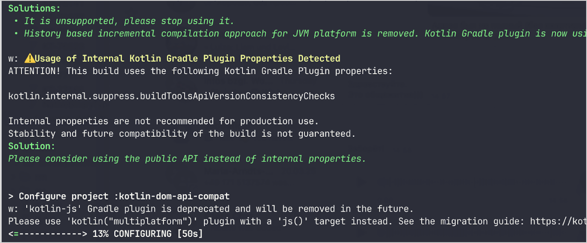

What's new in Kotlin 2.2.0-RC2
This document doesn't cover all of the features of the Early Access Preview (EAP) release, but it highlights some major improvements.
See the full list of changes in the GitHub changelog.
The Kotlin 2.2.0-RC2 release is out! Here are some details of this EAP release:
- Language: preview of context parameters
- Kotlin compiler: unified management of compiler warnings
- Kotlin/JVM: changes to default method generation for interface functions
- Gradle: integration of Problems API within KGP diagnostics and KGP compatibility with '--warning-mode'
IDE support
The Kotlin plugins that support 2.2.0-RC2 are bundled in the latest IntelliJ IDEA and Android Studio. You don't need to update the Kotlin plugin in your IDE. All you need to do is to change the Kotlin version to 2.2.0-RC2 in your build scripts.
See Update to a new release for details.
Language
This release promotes some language features as stable and brings context parameters in preview.
Stable features: guard conditions, non-local break and continue, and multi-dollar interpolation
In Kotlin 2.1.0, several new language features were introduced in preview. We're happy to announce that these language features became Stable in this release:
- Guard conditions in
whenwith a subject - Non-local
breakandcontinue - Multi-dollar interpolation: improved handling of
$in string literals
See the full list of Kotlin language design features and proposals.
Preview of context parameters
In this release, context parameters are introduced in preview. Context parameters allow functions and properties to declare dependencies that are implicitly available in the surrounding context.
This feature replaces an older experimental feature called context receivers. To migrate from context receivers to context parameters, you can use assisted support in IntelliJ IDEA, as described in the blog post.
How to declare context parameters
You can declare context parameters for properties and functions using the context keyword
followed by a list of parameters, each of the form name: Type. Here is an example with a dependency on the UserService interface:
// `UserService` defines the dependency required in context
interface UserService {
fun log(message: String)
fun findUserById(id: Int): String
}
// Declares a function with a context parameter
context(users: UserService)
fun outputMessage(message: String) {
// Uses `log` from the context
users.log("Log: $message")
}
// Declares a property with a context parameter
context(users: UserService)
val firstUser: String
// Uses `findUserById` from the context
get() = users.findUserById(1)
You can use _ as a context parameter name. In this case, the parameter's value is available for resolution but is not accessible by name inside the block:
// Uses `_` as context parameter name
context(_: UserService)
fun logWelcome() {
// Resolution still finds the appropriate `log` function from UserService
outputMessage("Welcome!")
}
Context parameters resolution
Kotlin resolves context parameters at the call site by searching for matching context values in the current scope. Kotlin matches them by their type. If multiple compatible values exist at the same scope level, the compiler reports an ambiguity:
// `UserService` defines the dependency required in context
interface UserService {
fun log(message: String)
}
// Declares a function with a context parameter
context(users: UserService)
fun outputMessage(message: String) {
users.log("Log: $message")
}
fun main() {
// Implements `UserService`
val serviceA = object : UserService {
override fun log(message: String) = println("A: $message")
}
// Implements `UserService`
val serviceB = object : UserService {
override fun log(message: String) = println("B: $message")
}
// Both `serviceA` and `serviceB` match the expected `UserService` type at the call site
context(serviceA, serviceB) {
outputMessage("This will not compile")
// Ambiguity error
}
}
Restrictions
Context parameters are in continuous improvement; some of the current restrictions are:
- Constructors cannot declare context parameters
- Properties with context parameters can't have backing fields or initializers
- Properties with context parameters can't use delegation
However, context parameters in Kotlin represent a significant improvement in managing dependencies through simplified dependency injection, improved DSL design, and scoped operations. For more information, see the feature's KEEP.
How to enable context parameters
To enable context parameters in your project, use the following compiler option in the command line:
-Xcontext-parameters
Or add it to the compilerOptions {} block of your Gradle build file:
// build.gradle.kts
kotlin {
compilerOptions {
freeCompilerArgs.add("-Xcontext-parameters")
}
}
Specifying both
-Xcontext-receiversand-Xcontext-parameterscompiler options simultaneously leads to an error.
Leave your feedback
This feature is planned to be stabilized and improved in future Kotlin releases. We would appreciate your feedback in our issue tracker YouTrack.
Kotlin compiler: unified management of compiler warnings
Kotlin 2.2.0-RC2 introduces a new compiler option, -Xwarning-level. It's designed to provide a unified way of managing compiler warnings in Kotlin projects.
Previously, you could only apply general module-wide rules, like disabling all warnings with
-nowarn, turning all warnings to compilation errors with -Werror, or enabling additional compiler checks with -Wextra. The only option to adjust them for specific warnings was the -Xsuppress-warning option.
With the new solution, you can override general rules and exclude specific diagnostics in a consistent way.
How to apply
The new compiler option has the following syntax:
-Xwarning-level=DIAGNOSTIC_NAME:(error|warning|disabled)
error: raises the specified warning to an error.warning: emits a warning and is enabled by default.disabled: completely suppresses the specified warning module-wide.
Keep in mind that you can only configure the severity level of warnings with the new compiler option.
Use cases
With the new solution, you can better fine-tune warning reporting in your project by combining general rules with specific ones. Choose your use case:
Suppress warnings
| Command | Description |
|---|---|
-nowarn |
Suppresses all warnings during compilation. |
-Xwarning-level=DIAGNOSTIC_NAME:disabled |
Suppresses only specified warnings. Works the same as -Xsuppress-warning. |
-nowarn -Xwarning-level=DIAGNOSTIC_NAME:warning |
Suppresses all warnings except for the specified ones. |
Raise warnings to errors
| Command | Description |
|---|---|
-Werror |
Raises all warnings to compilation errors. |
-Xwarning-level=DIAGNOSTIC_NAME:error |
Raises only specified warnings to errors. |
-Werror -Xwarning-level=DIAGNOSTIC_NAME:warning |
Raises all warnings to errors except for the specified ones. |
Enable additional compiler warnings
| Command | Description |
|---|---|
-Wextra |
Enables all additional declaration, expression, and type compiler checks that emit warnings if true. |
-Xwarning-level=DIAGNOSTIC_NAME:warning |
Enables only specified additional compiler checks. |
-Wextra -Xwarning-level=DIAGNOSTIC_NAME:disabled |
Enables all additional checks except for the specified ones. |
Warning lists
In case you have many warnings you want to exclude from general rules, you can list them in a separate file through @argfile.
Leave feedback
The new compiler option is still Experimental. Please report any problems to our issue tracker, YouTrack.
Kotlin/JVM
Changes to default method generation for interface functions
Starting from Kotlin 2.2.0-RC2, functions declared in interfaces are compiled to JVM default methods unless configured otherwise.
This change affects how Kotlin's interface functions with implementations are compiled to bytecode.
This behavior is controlled by the new stable compiler option -jvm-default, replacing the deprecated -Xjvm-default option.
You can control the behavior of the -jvm-default option using the following values:
enable(default): generates default implementations in interfaces and includes bridge functions in subclasses andDefaultImplsclasses. Use this mode to maintain binary compatibility with older Kotlin versions.no-compatibility: generates only default implementations in interfaces. This mode skips compatibility bridges andDefaultImplsclasses, making it suitable for new code.disable: disables default implementations in interfaces. Only bridge functions andDefaultImplsclasses are generated, matching the behavior before Kotlin 2.2.0-RC2.
To configure the -jvm-default compiler option, set the jvmDefault property in your Gradle Kotlin DSL:
kotlin {
compilerOptions {
jvmDefault = JvmDefaultMode.NO_COMPATIBILITY
}
}
Support for reading and writing annotations in Kotlin metadata
Previously, you had to read annotations from compiled JVM class files using reflection or bytecode analysis and manually match them to metadata entries based on signatures. This process was error-prone, especially for overloaded functions.
Now, in Kotlin 2.2.0-RC2, the Kotlin Metadata JVM library introduces support for reading annotations stored in Kotlin metadata.
To make annotations available in the metadata for your compiled files, add the following compiler option:
-Xannotations-in-metadata
Alternatively, add it to the compilerOptions {} block of your Gradle build file:
// build.gradle.kts
kotlin {
compilerOptions {
freeCompilerArgs.add("-Xannotations-in-metadata")
}
}
With this option enabled, the Kotlin compiler writes annotations into metadata alongside the JVM bytecode, making them accessible to the kotlin-metadata-jvm library.
The library provides the following APIs for accessing annotations:
KmClass.annotationsKmFunction.annotationsKmProperty.annotationsKmConstructor.annotationsKmPropertyAccessorAttributes.annotationsKmValueParameter.annotationsKmFunction.extensionReceiverAnnotationsKmProperty.extensionReceiverAnnotationsKmProperty.backingFieldAnnotationsKmProperty.delegateFieldAnnotationsKmEnumEntry.annotations
These APIs are Experimental.
To opt in, use the @OptIn(ExperimentalAnnotationsInMetadata::class) annotation.
Here's an example of reading annotations from Kotlin metadata:
@file:OptIn(ExperimentalAnnotationsInMetadata::class)
import kotlin.metadata.ExperimentalAnnotationsInMetadata
import kotlin.metadata.jvm.KotlinClassMetadata
annotation class Label(val value: String)
@Label("Message class")
class Message
fun main() {
val metadata = Message::class.java.getAnnotation(Metadata::class.java)
val kmClass = (KotlinClassMetadata.readStrict(metadata) as KotlinClassMetadata.Class).kmClass
println(kmClass.annotations)
// [@Label(value = StringValue("Message class"))]
}
If you use the
kotlin-metadata-jvmlibrary in your projects, we recommend testing and updating your code to support annotations. Otherwise, when annotations in metadata become enabled by default in a future Kotlin version, your projects may produce invalid or incomplete metadata.If you experience any problems, please report them in our issue tracker.
Kotlin/Native
Per-object memory allocation
Kotlin/Native's memory allocator can now reserve memory on a per-object basis. In some cases, it may help you avoid strict memory limitations or high memory consumption on the application's startup.
The new feature is designed to replace the -Xallocator=std compiler option that enabled the system memory allocator instead of the default one. Now you can disable buffering (paging of allocations) without switching memory allocators.
The feature is currently Experimental.
To enable it, set the following option in your gradle.properties file:
kotlin.native.binary.pagedAllocator=false
Please report any problems to our issue tracker YouTrack.
LLVM update from 16 to 19
In Kotlin 2.2.0-RC2, we updated LLVM from version 16 to 19. The new version includes performance improvements, bug fixes, and security updates.
This update shouldn't affect your code, but if you encounter any issues, please report them to our issue tracker.
Kotlin/Wasm: wasmJs target separated from js target
Before, the wasmJs target shared the same infrastructure as the js target. As a result, both targets were hosted in the same
directory (build/js) and used the same NPM tasks and configurations.
Now, the wasmJs target has its own infrastructure separate from the js target. This allows the
Wasm tasks and types to be distinct from the JavaScript ones, enabling independent configuration.
Additionally, the Wasm-related project files and NPM dependencies are now in a separate build/wasm directory.
New NPM-related tasks have been introduced for Wasm, while existing JavaScript tasks are now dedicated only to JavaScript:
| Wasm tasks | JavaScript tasks |
|---|---|
kotlinWasmNpmInstall |
kotlinNpmInstall |
wasmRootPackageJson |
rootPackageJson |
Similarly, new Wasm-specific declarations are introduced:
| Wasm declarations | JavaScript declarations |
|---|---|
WasmNodeJsRootPlugin |
NodeJsRootPlugin |
WasmNodeJsPlugin |
NodeJsPlugin |
WasmYarnPlugin |
YarnPlugin |
WasmNodeJsRootExtension |
NodeJsRootExtension |
WasmNodeJsEnvSpec |
NodeJsEnvSpec |
WasmYarnRootEnvSpec |
YarnRootEnvSpec |
You can now work with the Wasm target independently of the JavaScript target, which simplifies the configuration.
This change is enabled by default and requires no additional configuration.
Kotlin/JS
Fix for copy() in @JsPlainObject interfaces
Kotlin/JS has an experimental plugin called js-plain-objects, which introduced a copy() function for interfaces annotated with @JsPlainObject.
You can use the copy() function to manipulate objects.
However, the initial implementation of copy() was not compatible with inheritance, and this
caused issues when a @JsPlainObject interface extended other interfaces.
To avoid limitations on plain objects, the copy() function has been moved from the object itself to its companion object:
@JsPlainObject
external interface User {
val name: String
val age: Int
}
fun main() {
val user = User(name = "SomeUser", age = 21)
// This syntax is not valid anymore
val copy = user.copy(age = 35)
// This is the correct syntax
val copy = User.copy(user, age = 35)
}
This change resolves conflicts in the inheritance hierarchy and eliminates ambiguity. It is enabled by default starting from Kotlin 2.2.0-RC2.
Support for typealiases in files with @JsModule annotation
Previously, files annotated with @JsModule to import declarations from JavaScript modules
were restricted to external declarations only. Meaning, you couldn't declare a typealias in such files.
Starting with Kotlin 2.2.0-RC2, you can declare typealiases inside files marked with @JsModule:
@file:JsModule("somepackage")
package somepackage
typealias SomeClass = Any
This change reduces an aspect of Kotlin/JS interoperability limitations, and more improvements are planned for future releases.
Support for typealiases in files with @JsModule is enabled by default.
Gradle
Kotlin 2.2.0-RC2 is fully compatible with Gradle 7.6.3 through 8.14. You can also use Gradle versions up to the latest Gradle release. However, be aware that doing so may result in deprecation warnings, and some new Gradle features might not work.
Support for rich output in console for Kotlin Gradle plugin
In Kotlin 2.2.0-RC2, we support color and other rich output in the console during the Gradle build process, making it easier to read and understand the reported diagnostics. Rich output is available in supported terminal emulators for Linux and macOS. We're working on adding support for Windows.

This feature is enabled by default, but if you want to override it, add the following Gradle property to your gradle.properties file:
org.gradle.console=plain
For more information about this property and its options, see Gradle's documentation on Customizing log format.
Integration of Problems API within KGP diagnostics
Previously, the Kotlin Gradle Plugin (KGP) reported diagnostics—such as warnings and errors—only as plain text output to the console or logs.
Starting with 2.2.0-RC2, KGP introduces an additional reporting mechanism: it now uses Gradle's Problems API, a standardized way to report rich, structured problem information during the build process.
KGP diagnostics are now easier to read and more consistently displayed across different interfaces like the Gradle CLI and IntelliJ IDEA.
This integration is enabled by default, starting with Gradle 8.6 or later. As the API is still evolving, use the most recent Gradle version to benefit from the latest improvements.
KGP compatibility with '--warning-mode'
The Kotlin Gradle Plugin (KGP) diagnostics reported issues using fixed severity levels, meaning Gradle's --warning-mode command-line option had no effect on how KGP displayed errors.
Now, KGP diagnostics are compatible with the --warning-mode option, providing more flexibility. For example,
you can convert all warnings into errors or disable warnings entirely.
With this change, KGP diagnostics adjust the output based on the selected warning mode:
- When you set
--warning-mode=fail, diagnostics withSeverity.Warningare now elevated toSeverity.Error. - When you set
--warning-mode=none, diagnostics withSeverity.Warningare not logged.
This behavior is enabled by default starting with 2.2.0-RC2.
To ignore the --warning-mode option, set kotlin.internal.diagnostics.ignoreWarningMode=true in your Gradle properties.
Kotlin standard library: Stable Base64 and HexFormat APIs
In Kotlin 2.2.0-RC2, the Base64 API and HexFormat API are now Stable.
Base64 encoding and decoding
Kotlin 1.8.20 introduced Experimental support for Base64 encoding and decoding.
In Kotlin 2.2.0-RC2, the Base64 API is now Stable and
includes four encoding schemes, with the new Base64.Pem added in this release:
Base64.Defaultuses the standard Base64 encoding scheme.The
Base64.Defaultis the companion object of theBase64class. As a result, you can call its functions withBase64.encode()andBase64.decode()instead ofBase64.Default.encode()andBase64.Default.decode().Base64.UrlSafeuses the "URL and Filename safe" encoding scheme.Base64.Mimeuses the MIME encoding scheme, inserting a line separator every 76 characters during encoding and skipping illegal characters during decoding.Base64.Pemencodes data likeBase64.Mimebut limits the line length to 64 characters.
You can use the Base64 API to encode binary data into a Base64 string and decode it back into bytes.
Here's an example:
val foBytes = "fo".map { it.code.toByte() }.toByteArray()
Base64.Default.encode(foBytes) // "Zm8="
// Alternatively:
// Base64.encode(foBytes)
val foobarBytes = "foobar".map { it.code.toByte() }.toByteArray()
Base64.UrlSafe.encode(foobarBytes) // "Zm9vYmFy"
Base64.Default.decode("Zm8=") // foBytes
// Alternatively:
// Base64.decode("Zm8=")
Base64.UrlSafe.decode("Zm9vYmFy") // foobarBytes
On the JVM, use the .encodingWith() and .decodingWith() extension functions to encode and decode Base64 with input and output streams:
import kotlin.io.encoding.*
import java.io.ByteArrayOutputStream
fun main() {
val output = ByteArrayOutputStream()
val base64Output = output.encodingWith(Base64.Default)
base64Output.use { stream ->
stream.write("Hello World!!".encodeToByteArray())
}
println(output.toString())
// SGVsbG8gV29ybGQhIQ==
}
Hexadecimal parsing and formatting with the HexFormat API
The HexFormat API introduced in Kotlin 1.9.0 is now Stable.
You can use it to convert between numerical values and hexadecimal strings.
For example:
fun main() {
//sampleStart
println(93.toHexString())
//sampleEnd
}
For more information, see New HexFormat class to format and parse hexadecimals.